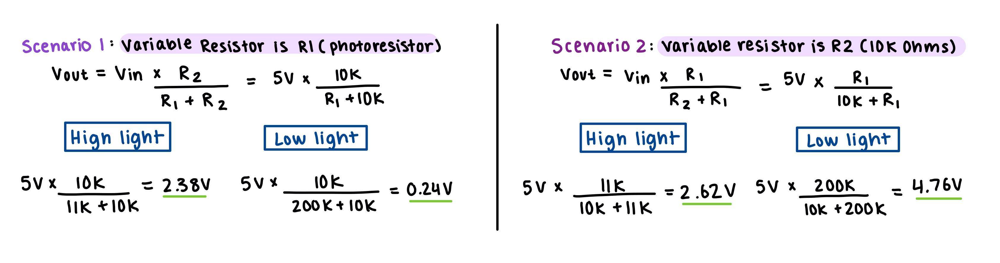

For this assignment, we were tasked to create a schematic, circuit, and code that uses a sensor (I chose
to use a photoresistor) in a voltage divider to change the state of an output device.
Since the output device could not be just a single LED, I wanted
to experiment with a new tool in our arduino kit, called the 1 digit 7-segment display.
I thought it would be fun to play around with which LEDs could create letters, numbers, or patterns on this single character display.
I wanted certain characters to show up depending on the light resistor's sensors.
On the right, you can see the final product where there is a countdown from 3, 2, 1, 0 as there is
less light around the photoresistor.
 \
\
The schematic of the photoresistor is similar to that in class, with the photoresistor connected to power and
the second resistor connected to ground.
After researching the schematic of a 1-digit 7 segment display, I used the reference diagram on the very
left to separate letters a to g to distinguish each individual LED light display. The second schematic on the right shows
all 7 LEDs connected to different pins on my arduino board with 220 Ohm resistors in between. The display as a whole is connected to ground.
The datasheet for the 7 segment display specifies 1.8 voltage drop for the each color LED shown in photos. By using
the formula V=I*R, the 220 Ohm resistors I used for each connection results in about 14.54mA current for each.
This is under the maximum of 40mA current, so it is justified. The schematic does not allow for multiple paths of current,
since each LED is connected to a different pin.

The actual values of the voltage divider will depend on the resistance of the
photo-resistor (R1) in different lighting conditions. Given the code I wrote below, the
minimum and maximum sensor values correspond to the minimum and maximum resistances of the photoresistor.
I checked the data sheet to see that the min/max resistance range of this photoresistor is between
0.2M Ohms and 11K Ohms. Now, taking this estimated range into account, I calculated the two extremes
of the voltage divider.
In my calculations, I estimated a voltage range between 0.24V and 2.38V. This is within the typical
operating range for an Arduino analog input, thus the 10K resistor for R2 is a justified choice. This fixed resistor is a
standard and commonly available, and also helps keep the power consumption relatively low.
Question One
In my voltage divider, the variable resistor can in fact be either R1 or R2. In the example calculations below,
you can see two scenarios where the variable resistor is different every time, which results in different voltage divide values.
So, depending on how one wants to design the circuit to perform, either can be used.

Question Two
In the GIF up above, it is a total of 4 seconds long. The animation starts with the photoresistor fully exposed to light. Thus, the
resistance is low and the voltage drop is high. Then as my hand moves closer to the photoresistor, at around 2 seconds is when it goes completely
dark for one second. this means the resistance is high and the voltage drop is low. Then I remove my hand and it goes back tot he original voltage drop.
Question Three
To adapt the code for a 10-pit PWM and a 16-bit analog. I would change the map() and analogWrite codes as follows.
sensorValue = map(sensorValue, sensorMin, sensorMax, 0, 65535);
analogWrite(ledPin7, 1023);
In my circuit, I plugged the LED outputs into pins 2, 3, 4, 5, 6, 7, and 9. These all
will correspond to the constants I defined and the pins I used analogWrite() on.
The range that the sensor will take in will be from 0 to 1023 as defined. The analogRead() function
is used to read the real time sensorValue from the sensor's pin. However, I used the map function
to map this range into values of 0 to 255. This mapping was useful because I printed the sensorvalue to the Serial,
and then played around with my hands covering the resistor. I understood the range of values (between 0 and 255) that
associated with different levels of light sensitivity, and used those to identify 4 different ranges of sensor values
that I could use in the if statements to create different LED visuals for each range.

/*
Input Output Assignment 3
This code begins by calibrating the sensor input. The sensor readings
during the first five seconds of the sketch execution define the minimum and
maximum of expected values attached to the sensor pin.
Then, depending on the sensor value, the LED pin confuguration displays numbers counting
down for 3 to 0, dependent on hand covering the light sensisitve resistor.
*/
// These constants won't change:
const int sensorPin = A0; // pin that the sensor is attached to
const int ledPin9 = 9; // pin that the LED is attached to (f in diagram)
const int ledPin7 = 7; // pin that the LED is attached to (c in diagram)
const int ledPin6 = 6; // pin that the LED is attached to (b in diagram)
const int ledPin5 = 5; // pin that the LED is attached to (a in diagram)
const int ledPin4 = 4; // pin that the LED is attached to (d in diagram)
const int ledPin3 = 3; // pin that the LED is attached to (e in diagram)
const int ledPin2 = 2; // pin that the LED is attached to (g in diagram)
// variables:
int sensorValue = 0; // the sensor value
int sensorMin = 1023; // minimum sensor value
int sensorMax = 0; // maximum sensor value
void setup() {
// initialize serial communications at 9600 bps:
Serial.begin(9600);
// turn on LED to signal the start of the calibration period:
pinMode(13, OUTPUT);
digitalWrite(13, HIGH);
// calibrate during the first five seconds
while (millis() < 5000) {
sensorValue = analogRead(sensorPin);
// record the maximum sensor value
if (sensorValue > sensorMax) {
sensorMax = sensorValue;
}
// record the minimum sensor value
if (sensorValue < sensorMin) {
sensorMin = sensorValue;
}
}
// signal the end of the calibration period
digitalWrite(13, LOW);
}
void loop() {
// read the sensor:
sensorValue = analogRead(sensorPin);
// in case the sensor value is outside the range seen during calibration
sensorValue = constrain(sensorValue, sensorMin, sensorMax);
// apply the calibration to the sensor reading
sensorValue = map(sensorValue, sensorMin, sensorMax, 0, 255);
// Print the current sensor value to the Serial Monitor
Serial.print("The current sensor value is: ");
Serial.println(sensorValue);
// Display different numbers based on sensor value
if (sensorValue >=220) {
// Your hand is far from the resistor, display "3" by turning on specific LED lights
analogWrite(ledPin9, 0);
analogWrite(ledPin7, 255);
analogWrite(ledPin6, 255);
analogWrite(ledPin5, 255);
analogWrite(ledPin4, 255);
analogWrite(ledPin3, 0);
analogWrite(ledPin2, 255);
} else if (sensorValue >= 130 && sensorValue <= 220) {
// Your hand is closer, display "2" by turning on specific LED lights
analogWrite(ledPin9, 0);
analogWrite(ledPin7, 0);
analogWrite(ledPin6, 255);
analogWrite(ledPin5, 255);
analogWrite(ledPin4, 255);
analogWrite(ledPin3, 255);
analogWrite(ledPin2, 255);
} else if (sensorValue >= 30 && sensorValue <= 130) {
// Your hand is even closer, display "1" by turning on specific LED lights
analogWrite(ledPin9, 255);
analogWrite(ledPin7, 0);
analogWrite(ledPin6, 0);
analogWrite(ledPin5, 0);
analogWrite(ledPin4, 0);
analogWrite(ledPin3, 255);
analogWrite(ledPin2, 0);
} else {
// Your hand is covering the light-sensitive resistor, display "0" by turning on specific LED lights
analogWrite(ledPin9, 255);
analogWrite(ledPin7, 255);
analogWrite(ledPin6, 255);
analogWrite(ledPin5, 255);
analogWrite(ledPin4, 255);
analogWrite(ledPin3, 255);
analogWrite(ledPin2, 0);
}
}